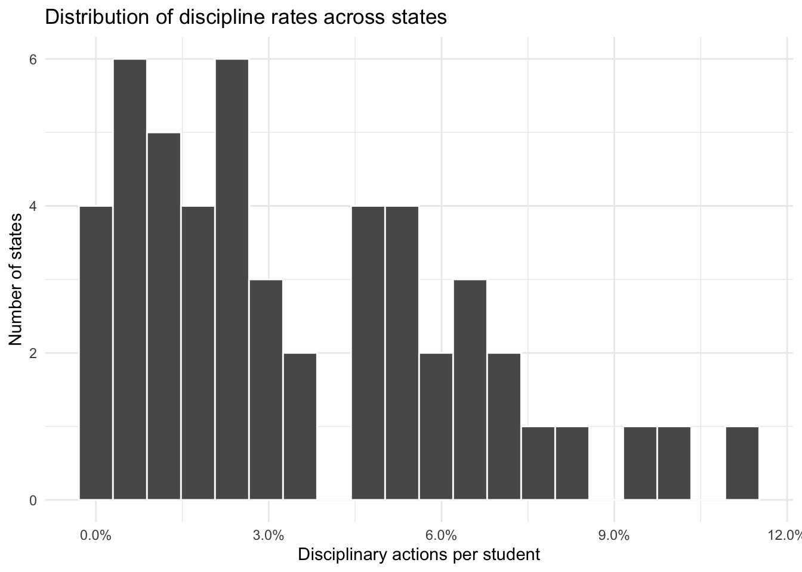
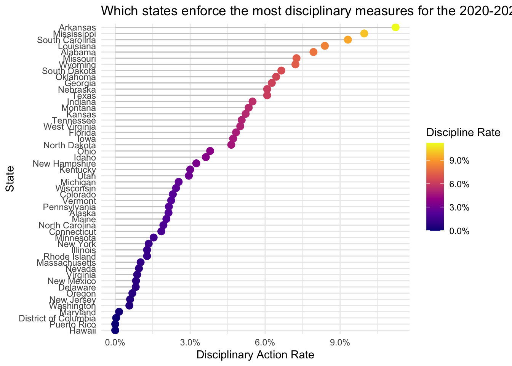
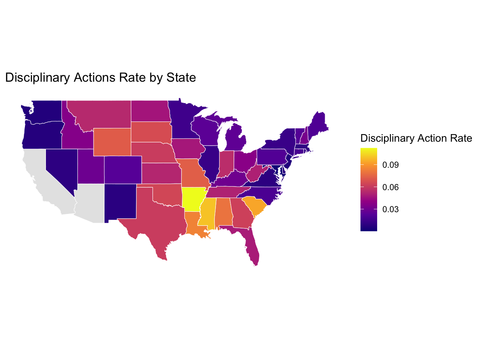
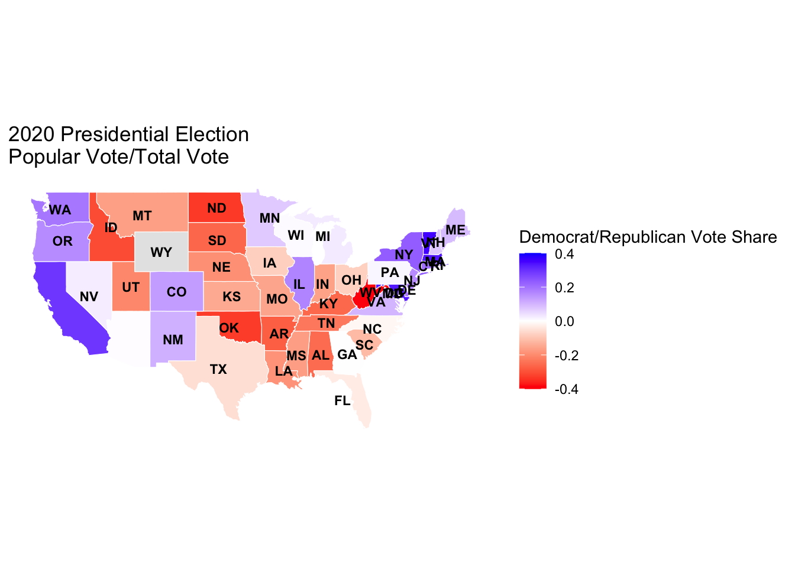
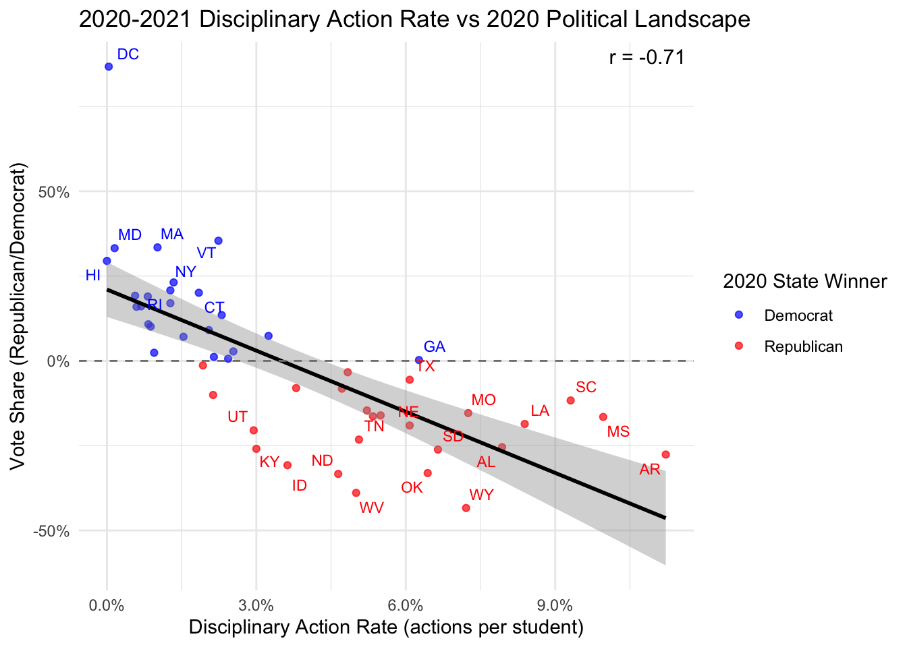
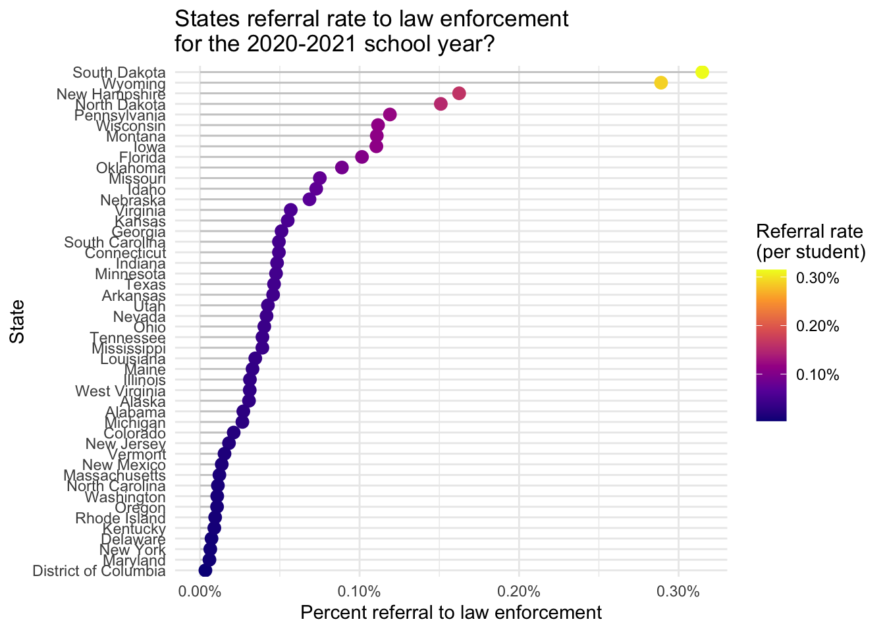
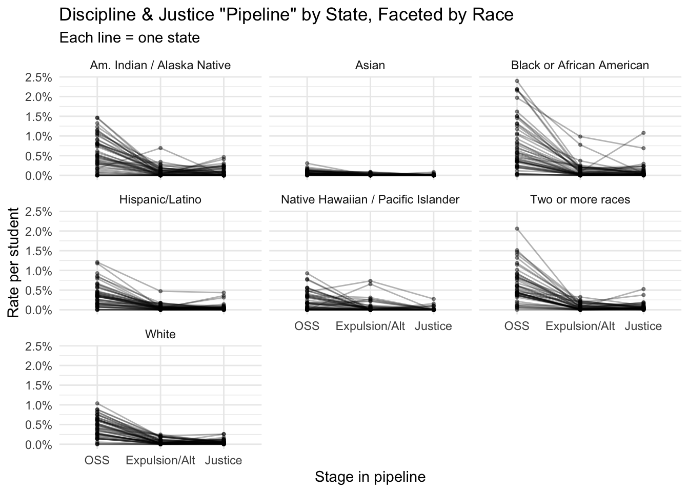
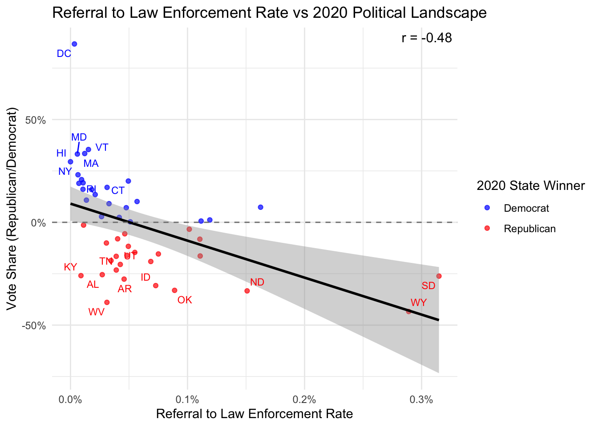
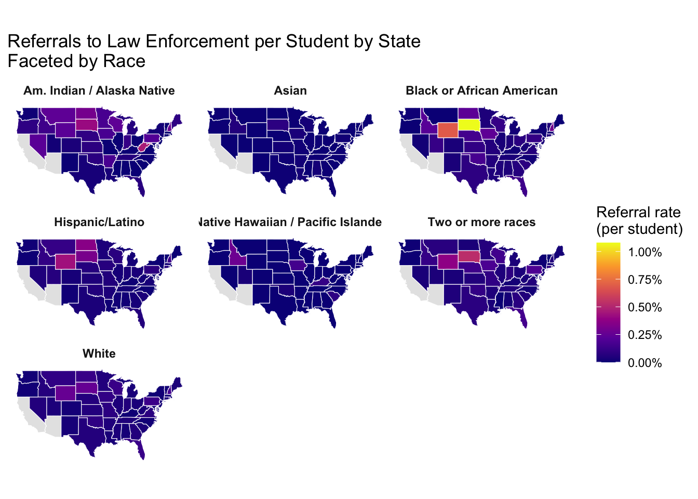

In order to contextualize standard disciplinary rates across the country and spot outlier states, the data was converted from raw discipline counts into an overall proportion: total disciplinary actions divided by total enrollment. The analysis below is standardized in this way so that states would be directly comparable. For example this would help mitigate for a case like Texas which has more disciplinary actions than a small state like Vermont, simply because it has more students. If the data was not standardized in this way the overall interpretation would have been heavily skewed or be an inaccurate representation.
Code
# Install if needed:# install.packages(c("readxl", "dplyr", "ggplot2", "stringr", "purrr"))library(readxl)library(dplyr)library(ggplot2)library(stringr)library(purrr)# Folder where all your state files live# e.g. "data/CRDC_2020-21_XX.xlsx" for each statedata_dir <-"./data/2020-2021"# <-- CHANGE THIS# List all state Excel filesfiles <-list.files( data_dir,pattern ="CRDC_2020-21_.*\\.xlsx$",full.names =TRUE)options(readxl.quiet =TRUE)
Code
disc_cols <-c(# Corporal punishment"TOT_DISCWODIS_CORP_M", "TOT_DISCWODIS_CORP_F","TOT_DISCWDIS_CORP_IDEA_M", "TOT_DISCWDIS_CORP_IDEA_F",# Expulsions (with/without services, zero-tolerance, etc.)"TOT_DISCWODIS_EXPWE_M", "TOT_DISCWODIS_EXPWE_F","TOT_DISCWDIS_EXPWE_IDEA_M", "TOT_DISCWDIS_EXPWE_IDEA_F","TOT_DISCWODIS_EXPWOE_M", "TOT_DISCWODIS_EXPWOE_F","TOT_DISCWDIS_EXPWOE_IDEA_M", "TOT_DISCWDIS_EXPWOE_IDEA_F","TOT_DISCWODIS_EXPZT_M", "TOT_DISCWODIS_EXPZT_F","TOT_DISCWDIS_EXPZT_IDEA_M", "TOT_DISCWDIS_EXPZT_IDEA_F",# Referrals to law enforcement"TOT_DISCWODIS_REF_M", "TOT_DISCWODIS_REF_F","TOT_DISCWDIS_REF_IDEA_M", "TOT_DISCWDIS_REF_IDEA_F",# School-related arrests"TOT_DISCWODIS_ARR_M", "TOT_DISCWODIS_ARR_F","TOT_DISCWDIS_ARR_IDEA_M", "TOT_DISCWDIS_ARR_IDEA_F",# In-school suspension"TOT_DISCWODIS_ISS_M", "TOT_DISCWODIS_ISS_F","TOT_DISCWDIS_ISS_IDEA_M", "TOT_DISCWDIS_ISS_IDEA_F",# Single out-of-school suspension"TOT_DISCWODIS_SINGOOS_M", "TOT_DISCWODIS_SINGOOS_F","TOT_DISCWDIS_SINGOOS_IDEA_M", "TOT_DISCWDIS_SINGOOS_IDEA_F",# Multiple out-of-school suspensions"TOT_DISCWODIS_MULTOOS_M", "TOT_DISCWODIS_MULTOOS_F","TOT_DISCWDIS_MULTOOS_IDEA_M", "TOT_DISCWDIS_MULTOOS_IDEA_F",# Transfers to alternative schools"TOT_DISCWODIS_TFRALT_M", "TOT_DISCWODIS_TFRALT_F","TOT_DISCWDIS_TFRALT_IDEA_M", "TOT_DISCWDIS_TFRALT_IDEA_F")
results <- purrr::map(files, compute_state_and_state_race_metrics, race_table = race_table)# overall-by-statestate_data <-bind_rows(lapply(results, `[[`, "state_data"))# state × racestate_race_rates <-bind_rows(lapply(results, `[[`, "state_race_data")) |>left_join(race_table, by ="race_code")
Code
library(dplyr)library(ggplot2)library(scales)plot_df <- state_data |>filter(total_students >0, !is.na(rate_per))ggplot(plot_df, aes(x = rate_per)) +# histogram (as density)geom_histogram(aes(y = ..density..),bins =20,color ="black",fill ="grey80" ) +# purple density curvegeom_density(linewidth =1,color ="purple" ) +scale_x_continuous("Disciplinary actions per student",labels =percent_format(accuracy =0.1) ) +labs(y ="Density",title ="Distribution of Discipline Rates Across States For The 2020-2021 School Year" ) +theme_minimal()

The histogram above plots the distribution of these discipline rates by density of states that fall in this range. This distribution of disciplinary rates is right skewed; most states cluster at a relatively low disciplinary rate, while a small number of states display higher rates. Understanding the distribution in this way gives a natural way to define and study outliers. States that sit in the right tail, well above where most of the density is concentrated, are those with unusually high levels of disciplinary action relative to their student population. Below we will explore which states which make up the outliers shown by this histogram.
Code
library(dplyr)library(ggplot2)library(scales)# state_data: state, total_students, total_actions, rate_perstate_disc <- state_data |>filter(total_students >0, !is.na(rate_per)) |>mutate(state_full =case_when( state %in% state.abb ~ state.name[match(state, state.abb)], state =="DC"~"District of Columbia", state =="PR"~"Puerto Rico",TRUE~ state ) )# 2. Cleveland dot plot with purple → yellow color scaleggplot(state_disc,aes(x =reorder(state_full, rate_per),y = rate_per)) +# stem from 0 to each pointgeom_segment(aes(xend = state_full, y =0, yend = rate_per),color ="grey80") +# dot, colored by discipline rategeom_point(aes(color = rate_per), size =3) +coord_flip() +scale_y_continuous(labels =percent_format(accuracy =0.1),name ="Disciplinary Action Rate" ) +scale_color_viridis_c(option ="C", # purple → yellowlabels =percent_format(accuracy =0.1),name ="Discipline Rate" ) +labs(x ="State",title ="Which states enforce the most disciplinary measures for the 2020-2021 school year?" ) +theme_minimal() +theme(legend.position ="right" )

We can observe this Cleveland Cot Plot was created to further understand the exact states and their corresponding disciplinary rates. From the plot we can see that there are clear outliers among the states. Arkansas, Mississippi, South Carolina, Louisana and Alabama all have the highest incidences of disciplinary actions. In contrast Hawaii, Puerto Rico, the District of Columbia, and Maryland have rates close to zero, indicating that formal disciplinary actions are relatively rare in those states. These rates cannot be directly interpreted as “10% of students in Arkansas have experienced a disciplinary measure” as the data reflects total actions per category which could reflect multiple disciplinary actions for a single student. It also appears states cluster around the 2–5% disciplinary action rate, this is supported by the histogram above.
Code
library(dplyr)library(ggplot2)library(maps)# 1. Prepare state data with full names and a 'region' columnstate_data_map <- state_data |>filter(total_students >0, !is.na(rate_per)) |>mutate(state_full =case_when( state %in% state.abb ~ state.name[match(state, state.abb)], state =="DC"~"District of Columbia", state =="PR"~"Puerto Rico",TRUE~ state ),region =tolower(state_full) )# 2. Get US state polygonsus_states <-map_data("state") # has column 'region' with lowercase state names# 3. Join polygons with your ratesmap_df <- us_states |>left_join(state_data_map, by ="region")# 4. Compute label positions (one per state)state_labels <- map_df |>group_by(region) |>summarise(long =mean(range(long)), # rough centroidlat =mean(range(lat)),label =first(state) # 2-letter abbreviation from your data )ggplot(map_df, aes(x = long, y = lat, group = group, fill = rate_per)) +geom_polygon(color ="white", linewidth =0.2) +geom_text(data = state_labels,aes(x = long, y = lat, label = label),inherit.aes =FALSE, # <-- key line: don't inherit 'group'color ="white",size =3,fontface ="bold" ) +coord_fixed(1.3) +scale_fill_viridis_c(option ="C",na.value ="grey90",name ="Disciplinary Action Rate " ) +labs(title ="Disciplinary Actions Rate Per State For The 2020-2021 School Year",x =NULL,y =NULL ) +theme_minimal() +theme(axis.text =element_blank(),axis.ticks =element_blank(),panel.grid =element_blank() )

This choropleth map helps to bridge the gap between understanding geographical patterns and enforcement of disciplinary actions. This helps to understand how student experiences vary across states and regions. It appears that Midwestern states have higher rates of disciplinary measures overall compared to other parts of the country. Mapping these data in this way can show how rates cluster in parts of the country. From this we can gather if these trends correlate with broader social or political leanings.
Code
# install.packages(c("readxl", "dplyr", "ggplot2", "viridis", "maps")) # run oncelibrary(readxl)library(dplyr)library(ggplot2)library(viridis)library(maps)# ---- 1. Read the Excel sheet 3 ----path <-"./data/federalelections2020.xlsx"raw_df <-read_excel( path,sheet ="3. Table 2 Electoral & Pop Vote",skip =3)# Explicit columns (based on the names you provided)state_col <-"...1"biden_pop_col <-"Biden (D)...4"trump_pop_col <-"Trunp (R)...5"total_col <-"Total Vote"# ---- 2. Clean to state-level rows ----df <- raw_df |>filter(!is.na(.data[[state_col]])) |>mutate(state =gsub("\\*", "", .data[[state_col]]) # remove * from ME*, NE* ) |>filter(nchar(state) ==2) |># keep only real statesmutate(biden_votes = .data[[biden_pop_col]],trump_votes = .data[[trump_pop_col]],total_votes = .data[[total_col]],winner =if_else(biden_votes > trump_votes, "Biden", "Trump"),signed_total_millions =if_else( winner =="Biden", total_votes,-total_votes ) /1e6 )election_df <- raw_df |>filter(!is.na(.data[[state_col]])) |>mutate(state =gsub("\\*", "", .data[[state_col]]) # remove * from ME*, NE* ) |>filter(nchar(state) ==2) |>mutate(biden_votes = .data[[biden_pop_col]],trump_votes = .data[[trump_pop_col]],total_votes = .data[[total_col]],winner =if_else(biden_votes > trump_votes, "Biden", "Trump"),margin_share = (biden_votes - trump_votes) / total_votes # between about -0.4 and 0.4 )# ---- 3. Map state abbreviations to full state names ----state_lookup <-tibble(state =c(state.abb, "DC"),region =tolower(c(state.name, "District of Columbia")))df_map <- election_df |>left_join(state_lookup, by ="state")# ---- 4. Join with map_data polygons ----us_map <-map_data("state")map_df <- us_map |>left_join(df_map, by ="region")# ---- 5. Plot (your exact style) ----ggplot( map_df,aes(x = long, y = lat, group = group, fill = margin_share)) +geom_polygon(color ="white", linewidth =0.2) +geom_text(data = state_labels,aes(x = long, y = lat, label = label),inherit.aes =FALSE, # <-- key line: don't inherit 'group'color ="black",size =3,fontface ="bold") +coord_fixed(1.3) +scale_fill_gradient2(low ="red",mid ="white",high ="blue",midpoint =0,limits =c(-0.4, 0.4), # symmetric around 0 so colors are balancedna.value ="grey90",name ="Democrat/Republican Vote Share" ) +labs(title ="2020 Presidential Election\n Popular Vote over Total Vote",x =NULL,y =NULL ) +theme_minimal() +theme(axis.text =element_blank(),axis.ticks =element_blank(),panel.grid =element_blank() )

When the disciplinary action rate map for 2020-2021 and the results of the 2020 presindential election are juxtaposed, a clear visual pattern emerges. It appears that states that lean more conservatively, shown in deeper red, tend to correspond with states that exhibit higher disciplinary action rates. In contrast many states that voted more liberally, shown in blue, align with lower disciplinary rates. Although this correlation cannot establish causality, the geographic overlap between political leanings and disciplinary action rates is striking.
Code
joined <- state_data |>left_join(election_df, by ="state")joined <- joined |>mutate(winner =if_else(margin_share >0, "Democrat", "Republican"),winner =factor(winner, levels =c("Democrat", "Republican")) )library(broom)library(ggrepel)# correlation + simple linear modelcor_test <-cor.test(joined$rate_per, joined$margin_share)cor_label <-paste0("r = ", round(cor_test$estimate, 2))ggplot(joined, aes(x = rate_per, y = margin_share)) +# 1) Democrats first (background)geom_point(data =filter(joined, winner =="Democrat"),aes(color = winner),alpha =0.7 ) +# 2) Republicans second (on top)geom_point(data =filter(joined, winner =="Republican"),aes(color = winner),alpha =0.7 ) +geom_smooth(method ="lm", se =TRUE, color ="black") +geom_hline(yintercept =0, linetype ="dashed", color ="grey50") +# labels: Dems first, then GOP on topgeom_text_repel(data =filter(joined, rate_per >0.06|abs(margin_share) >0.20, winner =="Democrat"),aes(label = state, color = winner),size =3,show.legend =FALSE ) +geom_text_repel(data =filter(joined, rate_per >0.06|abs(margin_share) >0.20, winner =="Republican"),aes(label = state, color = winner),size =3,show.legend =FALSE ) +annotate("text", x =Inf, y =Inf, label = cor_label,hjust =1.1, vjust =1.5, size =4) +scale_y_continuous(labels =percent_format(accuracy =1)) +scale_x_continuous(labels =percent_format(accuracy =0.1)) +scale_color_manual(values =c("Democrat"="blue", "Republican"="red"),name ="2020 State Winner" ) +labs(title ="Disciplinary Action Rate vs 2020 Political Landscape",x ="Disciplinary action rate (actions per student)",y ="Vote Share (Republican/Democrat)" ) +theme_minimal()

To further quantify this visual trend a scatter plot with a linear regression and corresponding confidence interval were fitted. The plot reveals a strong correlation between a states’ disciplinary action rate and its political leanings. An r value of -.71 indicates a strong correlation indicating that partisan alignment could be associated with discipline rates.
While this graph is not meant to imply that political ideology causes disciplinary rates to go up or down, it strongly suggests that there is a cultural or political environment that correlates partisan alignment with how frequently schools use disciplinary actions. This could include differences in state laws, funding levels, demographics, and other social factors. The scatterplot and the corresponding linear regression provide a compelling starting point to explore those trends more deeply.
Code
library(dplyr)library(ggplot2)library(maps)library(scales)# 1. Prep race-level data (NO filtering!)state_race_map <- state_race_rates |>mutate(state_full =case_when( state %in% state.abb ~ state.name[match(state, state.abb)], state =="DC"~"District of Columbia", state =="PR"~"Puerto Rico",TRUE~ state ),region =tolower(state_full) )# 2. Base US polygonsus_states <-map_data("state")# 3. Join polygons with race-level ratesmap_race_df <- us_states |>left_join(state_race_map, by ="region") |># Only drop polygons where we *never* had a race (join failed completely)filter(!is.na(race_label))# 4. Faceted choropleth by raceggplot( map_race_df,aes(x = long, y = lat, group = group, fill = rate_per_race)) +geom_polygon(color ="white", linewidth =0.2) +coord_fixed(1.3) +facet_wrap(~ race_label) +scale_fill_viridis_c(option ="C",na.value ="grey90", # states with no data for that race = greylabels =percent_format(accuracy =0.1),name ="Discipline rate" ) +labs(title ="Disciplinary Actions per Student by State\nFaceted by Race \nFor The 2020-2021 School Year",x =NULL,y =NULL ) +theme_minimal() +theme(axis.text =element_blank(),axis.ticks =element_blank(),panel.grid =element_blank(),strip.text =element_text(face ="bold") )
Diving deeper into studying what racial biases could exist in rate of disciplinary measures given, a choropleth graph depicting the disciplinary rates faceted by race was created. We can see a clear trend emerge that American Indian (Native American), Alaska Native, Black and Multiracial students experience notably higher rates of disciplinary measures.
Arkansas stands out as one of the states with consistently high disciplinary action rates, regardless of which race. On the faceted maps, Arkansas is repeatedly shaded in the upper end of the scale, indicating that students in the state experience disciplinary actions at disproportionately high levels compared with much of the country.
library(dplyr)library(ggplot2)library(scales)results_outcomes <- purrr::map_dfr( files, compute_state_race_outcomes,race_table = race_table)state_race_outcomes <- results_outcomes |>left_join(race_table, by ="race_code")state_ref <- state_race_outcomes |>group_by(state) |>summarise(total_students =sum(total_students_race, na.rm =TRUE),total_justice =sum(justice_count, na.rm =TRUE) ) |>ungroup() |>mutate(ref_per = total_justice / total_students)state_ref_long <- state_ref |>filter(total_students >0, ref_per >0) |># remove 0% statesmutate(state_full =case_when( state %in% state.abb ~ state.name[match(state, state.abb)], state =="DC"~"District of Columbia", state =="PR"~"Puerto Rico",TRUE~ state ) )ggplot(state_ref_long,aes(x =reorder(state_full, ref_per),y = ref_per)) +# grey stem from 0 to the valuegeom_segment(aes(xend = state_full, y =0, yend = ref_per),color ="grey80") +# dot at the value, colored by rategeom_point(aes(color = ref_per), size =3) +coord_flip() +scale_y_continuous(labels =percent_format(accuracy =0.01)) +scale_color_viridis_c(option ="C", # yellow ↔ purplelabels =percent_format(accuracy =0.01),name ="Referral rate\n(per student)" ) +labs(x ="State",y ="Referrals to law enforcement (per student)",title ="Which states are most likely to refer students to law enforcement \nfor the 2020-2021 school year?" ) +theme_minimal() +theme(legend.position ="right" )

Taking a closer look at rates of referral to law enforcement reveal interesting trends, a subset of the total disciplinary measures, most states maintain a relatively low rate of referrals to law enforcement. There are some outlier states such as South Dakota and Wyoming. Interestingly these two states do not have the highest rates of disciplinary measures. But of the actions taken a higher percentage result in referral to law enforcement. This pattern potentially suggests that referrals to law enforcement are not evenly distributed across the country nor are they correlated to volume disciplinary measures overall.
Code
library(ggplot2)library(scales)library(maps)us_states <-map_data("state")state_ref_map <- state_ref |>filter(total_students >0) |>mutate(state_full =case_when( state %in% state.abb ~ state.name[match(state, state.abb)], state =="DC"~"District of Columbia", state =="PR"~"Puerto Rico",TRUE~ state ),region =tolower(state_full) )map_df <- us_states |>left_join(state_ref_map, by ="region")ggplot(map_df,aes(x = long, y = lat, group = group, fill = ref_per)) +geom_polygon(color ="white", linewidth =0.2) +geom_text(data = state_labels,aes(x = long, y = lat, label = label),inherit.aes =FALSE, # <-- key line: don't inherit 'group'color ="white",size =3,fontface ="bold") +coord_fixed(1.3) +scale_fill_viridis_c(option ="C", # yellow → purplelabels =percent_format(accuracy =0.01),na.value ="grey90",name ="Referral rate\n(per student)" ) +labs(title ="Rate of Referrals to Law Enforcement by State For The 2020-2021 School Year",x =NULL, y =NULL ) +theme_minimal() +theme(axis.text =element_blank(),axis.ticks =element_blank(),panel.grid =element_blank() )

Visually, the map showing referral rates to law enforcement does not reveal the same distinct regional patterns observed in the overall disciplinary rate. However, there is still some visual evidence that states with higher levels of disciplinary action also tend to have higher rates of referrals to law enforcement.
Code
joined <- state_ref_map |>left_join(election_df, by ="state")joined <- joined |>mutate(winner =if_else(margin_share >0, "Democrat", "Republican"),winner =factor(winner, levels =c("Democrat", "Republican")) )library(broom)library(ggrepel)# correlation + simple linear modelcor_test <-cor.test(joined$ref_per, joined$margin_share)cor_label <-paste0("r = ", round(cor_test$estimate, 2))ggplot(joined, aes(x = ref_per, y = margin_share)) +# 1) Democrats first (background)geom_point(data =filter(joined, winner =="Democrat"),aes(color = winner),alpha =0.7 ) +# 2) Republicans second (on top)geom_point(data =filter(joined, winner =="Republican"),aes(color = winner),alpha =0.7 ) +geom_smooth(method ="lm", se =TRUE, color ="black") +geom_hline(yintercept =0, linetype ="dashed", color ="grey50") +# labels: Dems first, then GOP on topgeom_text_repel(data =filter(joined, ref_per >0.06|abs(margin_share) >0.20, winner =="Democrat"),aes(label = state, color = winner),size =3,show.legend =FALSE ) +geom_text_repel(data =filter(joined, ref_per >0.06|abs(margin_share) >0.20, winner =="Republican"),aes(label = state, color = winner),size =3,show.legend =FALSE ) +annotate("text", x =Inf, y =Inf, label = cor_label,hjust =1.1, vjust =1.5, size =4) +scale_y_continuous(labels =percent_format(accuracy =1)) +scale_x_continuous(labels =percent_format(accuracy =0.1)) +scale_color_manual(values =c("Democrat"="blue", "Republican"="red"),name ="2020 State Winner" ) +labs(title ="Referral to Law Enforcement Rate vs 2020 Political Landscape",x ="Referral to Law Enforcement Rate",y ="Vote Share (Republican/Democrat)" ) +theme_minimal()

Bringing it back to political trends, this scatter plot shows correlation between referral to law enforcement rates and its relationship to political leanings. The graph indicates a moderate correlation between a state’s rate of referrals to law enforcement and its 2020 presidential vote margin. While graph indicated some correlation indicating that higher referral rates tend to occur in more Republican-leaning states the pattern is much noisier than in the earlier disciplinary-rate plot. The overall picture could suggest that political orientation still relates to law-enforcement referral practices, but the association is weaker than for general disciplinary actions.
Code
library(dplyr)library(ggplot2)library(maps)library(scales)# 1. Prep race-level data for mappingstate_race_map <- state_race_outcomes |>mutate(state_full =case_when( state %in% state.abb ~ state.name[match(state, state.abb)], state =="DC"~"District of Columbia", state =="PR"~"Puerto Rico",TRUE~ state ),region =tolower(state_full) )# 2. Base US polygons (lower 48 + AK/HI)us_states <-map_data("state")# 3. Join polygons with justice referral ratesmap_race_df <- us_states |>left_join(state_race_map, by ="region") |># keep only polygons that matched some race (no extra NA facet)filter(!is.na(race_label))# 4. Faceted choropleth: referrals per student, by raceggplot( map_race_df,aes(x = long, y = lat, group = group, fill = justice_per_race)) +geom_polygon(color ="white", linewidth =0.2) +coord_fixed(1.3) +facet_wrap(~ race_label) +scale_fill_viridis_c(option ="C",na.value ="grey90", # states with no data for that race = greylabels =percent_format(accuracy =0.01),name ="Referral rate\n(per student)" ) +labs(title ="Referrals to Law Enforcement per Student by State\nFaceted by Race",x =NULL,y =NULL ) +theme_minimal() +theme(axis.text =element_blank(),axis.ticks =element_blank(),panel.grid =element_blank(),strip.text =element_text(face ="bold") )

These faceted maps show that referrals to law enforcement are far less uniformly distributed across racial groups than overall disciplinary actions. Most states maintain very low referral rates across all populations. However, a small cluster of states in the midwest, consistently display much higher referral rates for multiple racial groups. This pattern is especially pronounced for Black students. South Dakota in particular stands out with referral rates exceeding 1% far above the national baseline.The maps also reveal that the racial disparities visible in broader disciplinary measures tend to show weaker correlations in the context of law enforcement referrals.